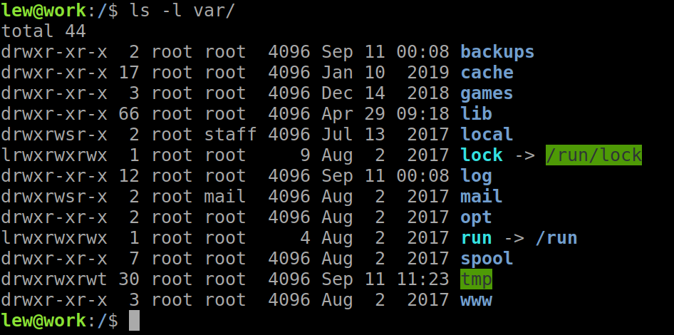

<!doctype html>
<html lang="sv">
<meta charset="utf-8" />
<title>vlinux kmom02</title>

<!-- Mithril HTML Slideshow styles -->
<link href="../../css/mithril-slideshow.css" rel="stylesheet" />

<!-- Code formatting using highlight.js -->
<link rel="stylesheet" href="../../css/default.css">
<link rel="stylesheet" href="../../css/tomorrow.css">
<script src="../../js/highlight.pack.js"></script>

<!-- Text formatting using Markdown through showdown.js -->
<script src="../../js/showdown.min.js"></script>

<style>
    h1 {
        border-bottom: 2px solid lime;
    }
    #slide {
        font-family: monospace;
        color: lime;
    }

    ul {
        list-style-type: none;
    }

    li:before {
        content: "$ ";
    }

    ul li ul li:before {
        content: "- ";
    }
</style>


<!-- Here comes the slides in order -->
<script data-role="slide" data-markdown type="text/html">
#vlinux kmom02
###Kenneth Lewenhagen, dbwebb
</script>


<!-- Slide -->
<script data-role="slide" data-markdown type="text/html">
#Agenda

* Filstruktur
* Apache Virtual Host

</script>


<!-- Slide -->
<script data-role="slide" data-markdown type="text/html">
#Filstruktur



</script>


<!-- Slide -->
<script data-role="slide" data-markdown type="text/html">
#/bin

* "Executables"
* Tillgängliga för alla
* cp, rm, mv, ls

</script>


<!-- Slide -->
<script data-role="slide" data-markdown type="text/html">
#/boot

* Konfiguration för kärnan och uppstart
* initrd - temporärt filsystem
* vmlinuz - komprimerad kärna
* grub - sköter uppstarten av systemet

</script>


<!-- Slide -->
<script data-role="slide" data-markdown type="text/html">
#/dev

* Filer som pekar på enheter
* Allt är en fil!
* sd? = hdd
* urandom
    * "environmental noise"

</script>


<!-- Slide -->
<script data-role="slide" data-markdown type="text/html">
#/etc

* Konfigurationsfiler för system/program

</script>


<!-- Slide -->
<script data-role="slide" data-markdown type="text/html">
#/home

* Hemmakatalog för icke-root användare

</script>


<!-- Slide -->
<script data-role="slide" data-markdown type="text/html">
#/lib, /lib32, /lib64

* lib-filer för systemet

</script>


<!-- Slide -->
<script data-role="slide" data-markdown type="text/html">
#/lost+found

* Sparade filer vid krash
* Inte röra

</script>


<!-- Slide -->
<script data-role="slide" data-markdown type="text/html">
#/media

* Automatisk montering för vissa externa enheter
* tex USB, CD-ROM

</script>


<!-- Slide -->
<script data-role="slide" data-markdown type="text/html">
#/mnt

* Montering av filsystem, hdd

</script>


<!-- Slide -->
<script data-role="slide" data-markdown type="text/html">
#/opt

* Blandad mjukvara

</script>


<!-- Slide -->
<script data-role="slide" data-markdown type="text/html">
#/proc

* virtuellt filsystem för resurser, processer etc
* <code>$ cat /proc/1/limits</code>

</script>


<!-- Slide -->
<script data-role="slide" data-markdown type="text/html">
#/root

* Hemmakatalog för root-användaren

</script>


<!-- Slide -->
<script data-role="slide" data-markdown type="text/html">
#/sbin

* /bin fast för sysadmin

</script>


<!-- Slide -->
<script data-role="slide" data-markdown type="text/html">
#/tmp

* Temporär, raderas vid omstart

</script>


<!-- Slide -->
<script data-role="slide" data-markdown type="text/html">
#/usr

* Mini-root (/)
* Specifikt för användarens program
* /usr/bin kör över /bin
* $PATH tar /bin sist

</script>


<!-- Slide -->
<script data-role="slide" data-markdown type="text/html">
#/var

* Systemet skriver data under körning
* /var/log/ - alla logg-filer

</script>


<script data-role="slide" data-markdown type="text/html">
# Apache Virtual Hosts
* Vhost
* Kör flera webbplatser (domäner) på en ipadress (server)
</script>


<script data-role="slide" data-markdown type="text/html">
# Lycka till!
</script>


<!-- include essential js-script -->
<script src="../../js/mithril.min.js"></script>
<script src="../../js/mithril-slideshow.js"></script>
<!-- default to theme 3 -->
<script>app.useTheme(3);</script>

</html>
